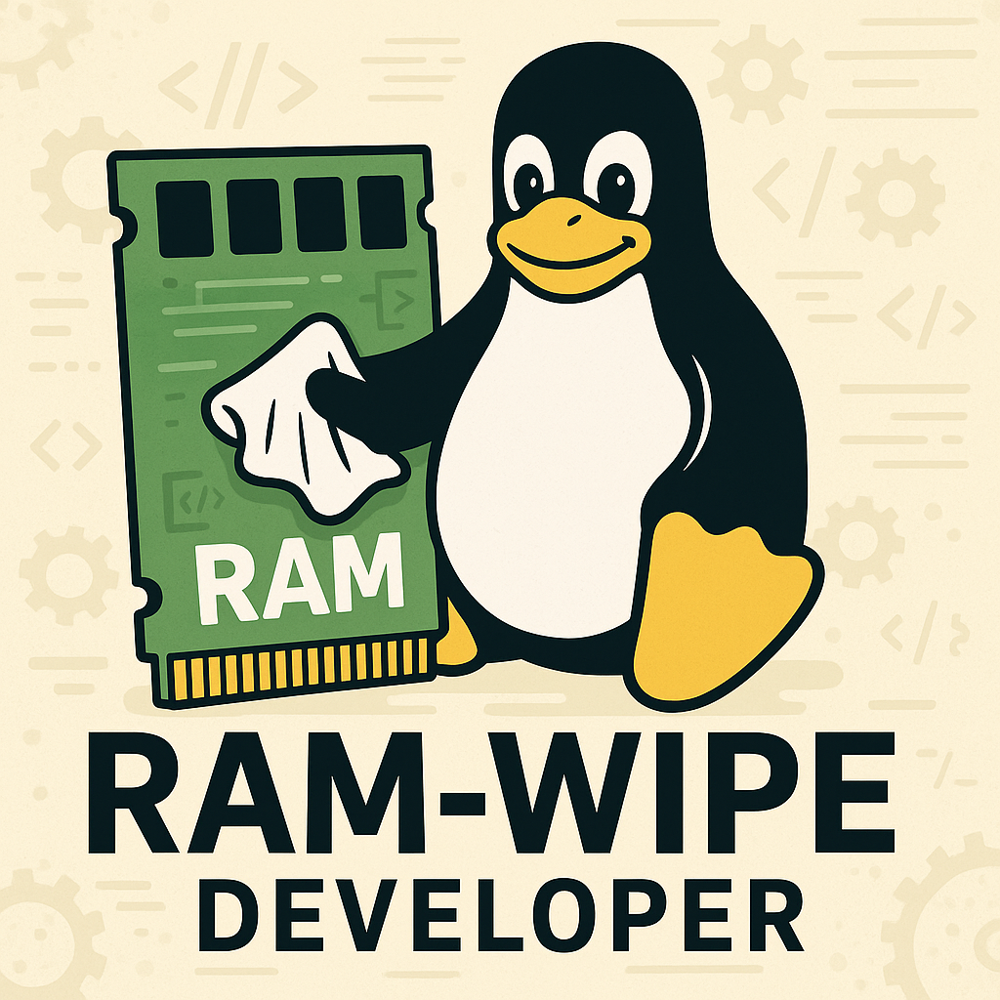

ram-wipe wipes the RAM during
poweroff/reboot, utilizing the kernel's init_on_free
mechanism.
Design
ram-wipe
Implemented by dracut module
 Kicksecure/ram-wipe
(by ram-wipe).
Kicksecure/ram-wipe
(by ram-wipe).
/usr/lib/dracut/modules.d/90crypt/cryptroot-ask.shrunsneed_shutdown.dracut-ngdm-shutdown.shrunscryptsetup closeto release the full disk encryption key during the shutdown process.- A dracut
cleanuphook is declared in Kicksecure/ram-wipe
(by ram-wipe):
Kicksecure/ram-wipe
(by ram-wipe):
inst_hook cleanup 80 "$moddir/wipe-ram-needshutdown.sh". Priority is80. - During boot, that dracut
cleanuphookKicksecure/ram-wipe
(by ram-wipe) is calling dracut API function need_shutdownwhich results in file/run/initramfs/.need_shutdownbeing created. - As a result, at shutdown time when
/lib/systemd/system/dracut-shutdown.service(by dracut) runs,/usr/lib/dracut/dracut-initramfs-restore(by dracut) will restore the initramfs and pivot into it. - During shutdown, dracut will run its usual cleanup tasks such as unmounting the root (main) drive.
- The
shutdownmodule (by dracut) willsourceand execute other shutdown hooks set up by other dracut modules. - At the time of writing, there were no other dracut modules using the dracut shutdown hook known to the author of this website.
- Kicksecure/ram-wipe
(by ram-wipe) is the dracut shutdown hook.
- An alternative description of the mechanism of dropping back to the initramfs during shutdown can be found under The initrd Interface of systemd.
- At a very late stage during the shutdown process, when all disks
have already been unmounted by dracut, the
wipe-ram.shdracut shutdown hook is executed. - The shutdown hook runs:
echo 3 > /proc/sys/vm/drop_caches- To ensure any remaining disk cache is erased by Linux's memory poisoning. [1]
dmsetup ls --target crypt: To check if all encrypted disks are unmounted.- Only if all encrypted disks are unmounted will it be possible for the kernel to wipe the Full Disk Encryption (FDE) key from the kernel.
- Deletion of the FDE key is considered among the most crucial pieces of information to be wiped from RAM because if the FDE key can be recovered from RAM, then FDE can be compromised.
- Informs the user if all encrypted disks are unmounted in console output. Otherwise, it shows a warning.
Quote Tails' Memory erasure:
First, most memory is erased at the end of a normal shutdown/reboot sequence. This is implemented by the Linux kernel's freed memory poisoning feature, more specifically
init_on_free=1.
Additional kernel parameters shared with the Tails
kernel hardening setup are implemented in the security-misc file
 Kicksecure/security-misc:
Kicksecure/security-misc:
- disabling merging of slabs with similar size
(
slab_nomerge) - passing
FZtoslab_debug - enabling the kernel page allocator to randomize free lists
(
page_alloc.shuffle=1) - disabling vsyscalls (superseded by vDSO)
(
vsyscall=none) - causing kernel panic on unhandled exceptions
(
mce=0)
The kernel parameter wiperam=skip is available to
disable RAM wiping at shutdown, which can be useful to speed up shutdown
or in case any issues arise.
For potential limitations, the same limitations described under the "Limitations" chapter of Tails' Memory erasure apply.
ram-wipe-exit
dracut module ram-wipe-exit:
- The other dracut module
ram-wipeis independent.- The
ram-wipemodule, in its main source code filewipe-ram.sh, relies on dropping the remaining disk caches, ensuring that encrypted disks have been unmounted and using the kernel'sinit_on_freemechanism.
- The
Differences of ram-wipe versus Tails Memory Erasure
Tails memory erasure:
- Based on Linux memory poisoning
- Requires
initramfs-tools - Based on
systemd-shutdown/lib/systemd/system-shutdown - Requires Tails-specific hook scripts such as
/usr/local/lib/initramfs-restore//usr/local/lib/udev-watchdog-wrapper - ISO-specific / Live boot-specific / squashfs-specific
- Mixes the panic button / emergency shutdown / ISO removal trigger into the same scripts
- Blueprints:
ram-wipe:
- Based on Linux
init_on_freemechanism - Requires
dracut - More generic
- Should work on any Debian
- Should be relatively easy to port to any Linux distribution since it
is implemented as a
dracutmodule - Should work equally for persistent boot from hard drive, live boot from hard drive, or ISO live boot
- A panic button / panic shutdown / USB kill cord for your laptop feature is not mixed with this feature. It should be implemented separately as a standalone feature.
Debugging
- A Kicksecure or Whonix VM using VirtualBox with a virtual serial console
(<-- see this already existing, fully tested, and functional
documentation on how to set that up), as this can display and persist
echomessages even after the VM has already been powered off or rebooted. - In Kicksecure / Whonix, the package debug-misc might be
useful
(
sudo apt update && sudo apt install debug-misc) due to:- Kicksecure/debug-misc
- Kicksecure/debug-misc
- Kicksecure/debug-misc
- (These files can be used standalone, manually installed, or "bulk" installed by installing the debug-misc package.)
(This file would be shipped out commented by default. Only useful for development / debugging.)
Maybe useful during development:
grep -r pre-udev --color /usr/lib/dracut
A panic button / panic shutdown / USB kill cord for your laptop feature is not integrated with this feature. It should be implemented separately as a standalone feature.
Status of initramfs-tools Support
Support for initramfs-tools is not planned by the
authors of ram-wipe. No progress
on initramfs-tools support should be expected.
The problem with initramfs-tools support is that, in
contrast to dracut, while initramfs-tools
supports initrd (initial ramdisk), it does not support
exitrd (exit ramdisk).
dracut supports both initrd (initial
ramdisk at boot time) as well as exitrd (dropping back to
the initial ramdisk at shutdown time). A feature request has been posted
against the Debian
initramfs-tools package: Support
restoring initrd on shutdown and pivoting into it.
Contributors wishing to add initramfs-tools support to
ram-wipe should first add
exitrd support to upstream, original
initramfs-tools.
As a starting point, Tails has implemented initramfs-restore,
which might be helpful to examine and use as inspiration when developing
exitrd functionality for initramfs-tools. The
Tails initramfs-tools exitrd implementation
would have to be made generic - meaning not specific to Tails (i.e., no
code references to other Tails-specific code) - and made acceptable for
the initramfs-tools developers for inclusion into the
upstream source code. However, using the Tails implementation as a
starting point is not a strict requirement.
Once initramfs-tools gains exitrd support,
it might then be straightforward to add initramfs-tools
support to ram-wipe.
Development TODO
- ram-wipe known issues require fixing.
ram-wipe Testing inside a VM
1. Platform-specific notice.
- Kicksecure: No special notice.
- Qubes OS: ram-wipe is unavailable for Qubes OS. [2]
2. Install ram-wipe.
ram-wipe is not installed by default in VMs because it
is usually not needed there, except for testing.
Install package(s) ram-wipe following these
instructions:
1 Platform specific notice.
- Kicksecure: No special notice.
- Kicksecure-Qubes: In Template.
2 Update the package lists and upgrade the system.
sudo apt update && sudo apt full-upgrade
3
Install the ram-wipe package(s).
Using apt command line --no-install-recommends option is in
most cases optional.
sudo apt install --no-install-recommends ram-wipe
4 Platform specific notice.
- Kicksecure: No special notice.
- Kicksecure-Qubes: Shut down Template and restart App Qubes based on it as per Qubes Template Modification.
5 Done.
The procedure of installing package(s) ram-wipe is
complete.
3. Reboot
sudo reboot
4. Set up a virtual serial console.
A virtual serial console helps to read all journal and kernel messages during early boot and shutdown.
Can be set up as per the serial console documentation. Only a read-only serial console was somewhat recently tested and should suffice. An interactive serial console might not be required.
5. Status.
Now a serial console should clearly show the output during boot and shutdown of ram-wipe.
ram-wipe Functionality Testing
Done.
Testing ram-wipe is non-trivial since it happens by the time the root (system) image has already been unmounted. Therefore Check Systemd Journal Log of Previous Boot cannot be used. ram-wipe Testing inside a VM has some value because then during shutdown with the help of a serial console, diagnostic log messages can be shown before they disappear. This is useful to confirm that dracut executed the ram-wipe module.
Through testing of ram-wipe has been performed by 3MDEB.
-
ram-dump-efi- Minimalistic application to dump RAM from EFI, based on Dasharoram-remanence-tester - https://blog.3mdeb.com/2025/2025-08-27-ram-wipe-further-analysis/
ram-wipe improvements
-
sdmemis problematic: it is unmaintained upstream, and there has been at least one case where shutdown was blocked due to a "kernel locked up" error. Writing to RAM until it fills up andsdmemgets OOM-killed is not a robust design. We should either replacesdmemor drop it entirely. It seems feasible to drop it. -
Review how Tails handles memory erasure: Tails memory erasure design. They primarily rely on the kernel parameterDone. Testing was done by 3MDEB: https://blog.3mdeb.com/2025/2025-08-12-ram-wipe-further-analysis/init_on_free=1. -
The second RAM wipe pass might be completely unnecessary. It can cause issues with graphics initialization during the second run due to buggy drivers. This makes reboot or shutdown slower and potentially glitchy.Done. (No longer necessary. Removed.) - All we
might need to do is: Done.
- Set
init_on_free=1(currently only set insecurity-misc, but it should be set inram-wipeto make it standalone). Done. - Drop caches (already implemented). Done.
- Properly
unmount all encrypted disks (already done due to fixes in
dracutin Debian Trixie). Done. - Drop back
to
initrd(already implemented). Done. - Re-test. Done.
- Set
Forum Discussion
https://forums.whonix.org/t/is-ram-wipe-possible-inside-whonix-cold-boot-attack-defense/5596
See Also
- RAM Wipe Archived Development Notes
- Cold Boot Attack Defense
ram-wipeUser Documentation- Kicksecure/ram-wipe
- https://github.com/memtest86plus/memtest86plus/discussions/266